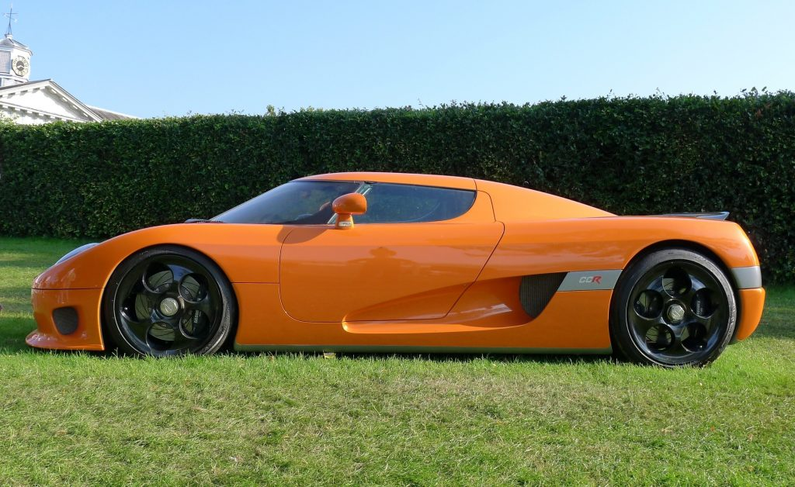

Aston Martin ONE-77 is a limited production British supercar with only 77 total produced. The ONE-77 features a massive 7.3 V12 engine that produces 750HP and 800 lb-ft of torque. It accelerates from 0-60 mph in 3.5 seconds and goes all the way up to 220 mph, which makes it the 10th fastest car in the world.
more infoPagani Huayra is an Italian hypercar produced by Pagani automotive. Although Huayra is mostly praised for its drop dead gorgeous looks, this car is seriously fast. It features a 6.0L AMG V12 engine that churns out 730HP. The Huayra can go up to a speed of 230 mph.
 more info
more info
Zenvo ST1 is one of the newest supercars on the market, just making its public debut in 2013 at the World Luxury Expo at the Magnificant Emirates Palace. Hailing from Denmark, this car features a 6.8L V8 engine that allows the car to hit an impressive speed of 233 mph.
more infoConsidered by many as one of the greatest cars ever built, the McLaren F1 ruled the 90s with its unmatched performance figures at the time. It has a mind-blowing top speed of 241 mph, which made it the fastest car in the world at the time.
more infoKoenigsegg CCR was the first car to beat the top speed record of the mighty McLaren F1. The CCR hit a top speed of 242 mph in 2005, making it the new fastest car in the world at that time.
 more infoSSC Ultimate Aero is manufactured in the United States and was built to compete directly with the heavily dominated European supercar market. It had a brief stint at the top between the years 2007-2010 making its way into the Guinness Book of World Records. The car can go up to 256 mph.
more info9FF GT9 is a German supercar made by the tuning company ‘9FF.’ This car is based on the Porsche 911 and has a top speed of 257 mph, making it the 4th fastest car in the world.
more infoBugatti Veyron was the undisputed king of cars during the mid 2000s. The SuperSport version of the Veyron features a gigantic 8.0L quad-turbo W16 engine that produces 1,200HP. This car accelerates from 0-60 mph in just 2.4 seconds, and it can hit a top speed of 268 mph.
more infoThe Venom GT is a hypercar produced by an American tuning company Hennessey. The car is based on the Lotus Elise sports car and it was the car to beat the Bugatti Veyron SuperSport for the ultimate speed crown.
 more info
more info
In 2017, Koenigsegg shattered all the top speed records and came to be known as the fastest production car in history. The Agera R hypercar features a 5.0L turbocharged V8 engine that produces 1140Hp. This car can hit a top speed of 273 mph, currently making it the fastest car in the world.
more info